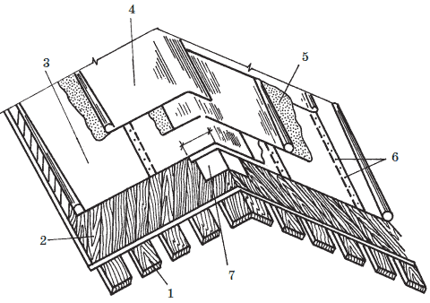
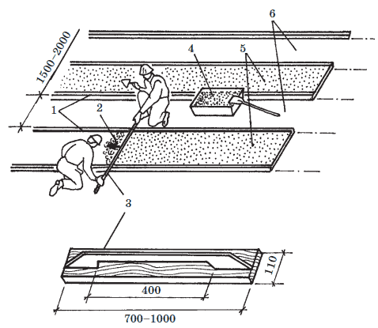
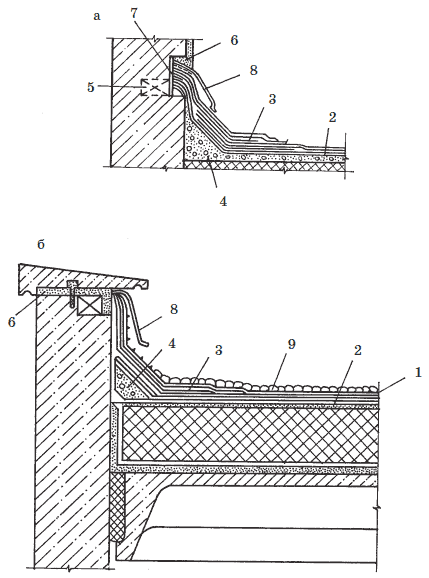

Основание под рулонную кровлю.

Основания под рулонную кровлю могут быть деревянными, из монолитных, бетонных или железобетонных плит, сборных железобетонных панелей перекрытия или покрытия или в виде цементно-песчаной, асфальтобетонной и др. стяжки по неровному железобетонному основанию или слою утеплителя.
Деревянное основание устраивают в виде двойного деревянного настила: уложенный по несущим конструкциям нижний настил, так называемый рабочий, выполняется из досок толщиной 22 мм они идут с зазорами на расстоянии не более 30 см друг от друга; верхний настил, так называемый сплошной, выполняется из антисептированных досок размером 20x50 мм прибитых к рабочему настилу под углом 30–45°. Основание не должно иметь щелей и отверстий от выйавших сучков, а также выступов и провесов. Деревянный настил прошпаклевывают мастикой при помощи шпателя или покрывают битумной мастикой ( рис. 19). Перед огрунтовкой основание тщательно очищается от грязи и просушивается.

Рис. 19. Устройство рулонной кровли по сплошной дощатой обрешетке: 1 – рабочий настил; 2 – защитный настил; 3 – бес пок ров ный рубероид; 4 – рубероид; 5 – мастика; 6 – кровельная сталь; 7 – полоса рубероида
Устройство основания под рулонную кровлю по цементно-песчаной стяжке. В качестве основания под рулонное покрытие по железобетону применяют выравнивающую стяжку из цементно-песчаного раствора марки не ниже 50 или из песчаного асфальтобетона. Толщина стяжки при укладке по бетону – 1015 мм, по жестким плитам утеплителя – 15–25 мм, по сыпучим утеплителям – 25–30 мм. При уклоне кровли менее 15 % стяжку сначала устраивают на разжелобках, а затем – на скатах; при уклоне больше 15 % соблюдается обратный порядок: сначала выравнивают скаты, а в последнюю очередь – разжелобки и ендовы.
Асфальтобетон применяют только для устройства стяжек на плоскостях скатов. Стяжки на вертикальных и крутых плоскостях, как, например, парапеты или вспомогательные стены, выполняются из цементно-песчаных растворов или бетонных плиток.
Совет
До выполнения стяжки необходимо закончить устройство всех парапетов, вентиляционных шахт, выходов на крышу и других работ на кровле.
Цементно-песчаную стяжку устраивают, укладывая цементно-песчаный раствор по маячным рейкам полосами шириной до 2 м. Поверхность уложенного раствора выравнивают правилом или мастерком ( рис. 20). Следующую полосу цементно-песчаной стяжки укладывают после схватывания уложенных ранее полос.

Рис. 20. Устройство стяжки по маячным рейкам: 1 – разравнивание раствора; 2 – свежая полоса стяжки; 3 – правило; 4 —ящик; 5 – готовая стяжка; 6 – промежуточные полосы
В местах примыкания стяжки к выступающим над крышей частям здания и на перегибах основания крыши делают переходные наклонные бортики шириной 150 мм под углом 45°, закругляя их для лучшей приклейки рулонного ковра ( рис. 21).

Рис. 21. Устройство примыканий кровель из рулонных материалов: а – примыкание кровли к стенам; б – примыкание плоской кровли к парапету: 1 – рулонный гидроизоляционный ковер; 2 – стяжка; 3 – дополнительные слои ковра; 4 – борт из раствора; 5 – деревянная пробка; 6 – цементно-песчаный раствор; 7 – стоячий хомут; 8 – защитный фартук; 9 – защитный гравийный слой
Перед началом работ вокруг зоны устройства стяжки на скатах покрытия устанавливают инвентарные ограждения, а по свесам прибивают бортовые доски.
Внимание!
При устройстве стяжек из цементно-песчаного раствора через каждые 6 м оставляют температурно-усадочные швы, ограничивающие саму стяжку. Для образования температурно-усадочных швов при устройстве стяжки закладывают деревянные рейки толщиной 10 мм, которые затем удаляют, а швы заделывают кровельной мастикой и заклеивают полоской рулонного материала.
Поверхность основания выравнивают, все выбоины и раковины заделывают холодными битумными грунтовками. В качестве грунтовки применяют раствор битума ВН-70/30 в медленно испаряющемся растворителе – керосине или соляровом масле в соотношении 1:(2–3). Свежеуложенный раствор стяжки пропитывается битумом на глубину не менее 2 мм, и на поверхности стяжки образуется пленка, препятствующая испарению воды из раствора. Время высыхания грунтовки на затвердевших стяжках 12 часов, на свежеуложенных – не менее 48 часов.
Совет
Перед огрунтовкой основание очищается от мусора и пыли. Огрунтовку выполняют распылением холодного грунтового состава на абсолютно сухую поверхность захватками с шириной полосы 3–4 м.